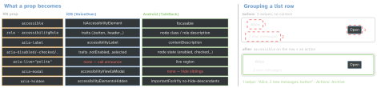

react-native · folio
In one line: VoiceOver and TalkBack read the native view tree, not your JSX: RN maps each
prop onto UIAccessibility (iOS) or AccessibilityNodeInfo (Android). Prefer the
web-aligned role + aria-* props (role wins over accessibilityRole); a few needs
stay platform-specific — live regions are Android-only, iOS uses announcements;
modal scoping is iOS-only.
Download PDF Print view LaTeX source


How it works
- Elements by default:
Text,TextInput,Switch;Pressable/touchables render anaccessibleView. A plainViewis not. Anaccessibleparent groups its children: one focus stop, label = the children’s text joined. roletakes web names (heading,img,slider,searchbox,list,presentation…); state/value viaaria-checked('mixed'),aria-expanded,aria-busy,aria-valuemin/max/now/text— same data asaccessibilityState/accessibilityValue.- Hint: iOS reads it after a pause and users can switch hints off; Android always reads it. Keep it a short result (“Removes it”), never the label again.
- Actions:
accessibilityActions(activate,increment/decrementfor adjustable,longpress/expand/collapseAndroid,magicTap/escapeiOS, or custom) +onAccessibilityAction— the swipe-to-delete for screen readers. - Focus order = native tree order. Reorder:
experimental_accessibilityOrder(list ofnativeIDs). Move focus after navigation or an error:AccessibilityInfo.sendAccessibilityEvent(ref, 'focus')(setAccessibilityFocusdeprecated in 0.85). - Speak a change: Android
aria-live="polite"|"assertive"on the view that changes; iOS has no live regions →announceForAccessibility(msg)(iOS:…WithOptions(msg, {queue: true}),announcementFinishedevent). - User settings (Promises + change events): both
isScreenReaderEnabled,isReduceMotionEnabled; iOSisBoldTextEnabled,isReduceTransparencyEnabled,isInvertColorsEnabled; AndroidisHighTextContrastEnabled,getRecommendedTimeoutMillis(toasts, auto-dismiss). - Text size:
allowFontScaling(defaulttrue),maxFontSizeMultiplier; readuseWindowDimensions().fontScale. Fixed-height text rows clip at 200%.
VoiceOver vs TalkBack
| VoiceOver | TalkBack | |
|---|---|---|
| hint | optional, after pause | always read |
| live change | announce API | aria-live region |
| modal scope | aria-modal | hide siblings (aria-hidden) |
| labelled by | — | aria-labelledby (nativeID) |
| extra gestures | escape (2-finger Z), magic tap | actions menu |
Example
<Pressable role="button" aria-label="Delete draft"
accessibilityHint="Removes it from this phone"
aria-disabled={saving} disabled={saving}
hitSlop={10} onPress={remove}> // 24pt icon, 44pt target
<TrashIcon />
</Pressable>
<Pressable role="button" onPress={open} // one stop per row
accessibilityActions={[{ name: 'archive', label: 'Archive' }]}
onAccessibilityAction={e =>
e.nativeEvent.actionName === 'archive' && archive()}>
<Text>Alice</Text><Text>2 new messages</Text>
</Pressable>
<Text aria-live="polite">{status}</Text> // Android
useEffect(() => { // iOS (works on both)
AccessibilityInfo.announceForAccessibility(status); }, [status]);
// test: only accessibility elements match, hidden ones excluded
expect(screen.getByRole('button', { name: 'Delete draft' }))
.toBeDisabled();WCAG basics
- Contrast (1.4.3): text ≥ 4.5:1, large text (18 pt / 14 pt bold) ≥ 3:1; UI parts and focus rings ≥ 3:1 (1.4.11). Never colour alone.
- Target size: Apple 44×44 pt, Material 48×48 dp; WCAG 2.2 AA minimum 24×24 CSS px (2.5.8).
hitSlopgrows the touch area without changing layout. - Respect reduce motion (swap slides for fades; Reanimated
useReducedMotion()), don’t auto-dismiss faster than the recommended timeout.
Testing
Manual: VoiceOver + Xcode Accessibility Inspector (audit); TalkBack + Android Accessibility Scanner (targets, contrast, labels). Automated: RNTL *ByRole / *ByLabelText / *ByHintText — a View matches by role only if accessible. testID is for E2E (iOS accessibilityIdentifier) — never spoken.
Traps
- An
accessiblecard with a button inside: the button is no longer its own stop — expose it as an action. - “Disabled” shown by opacity only: the screen reader still says it works — set
disabled/aria-disabled. aria-livedoes nothing on iOS;aria-modalnothing on Android.- Icon-only
Pressablewithoutaria-label: there is no name to read.